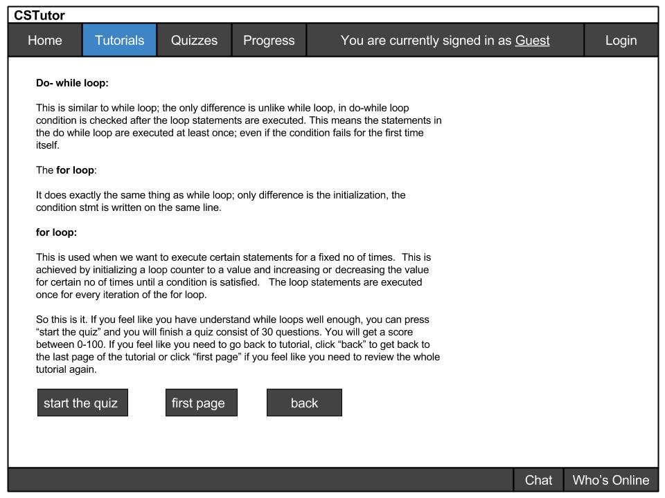
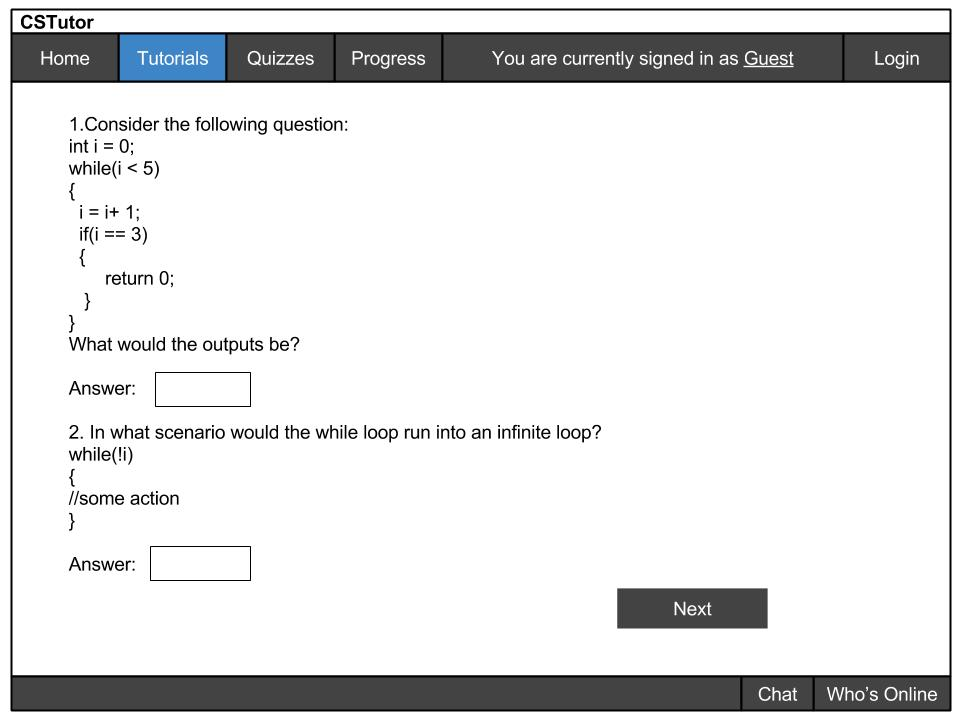
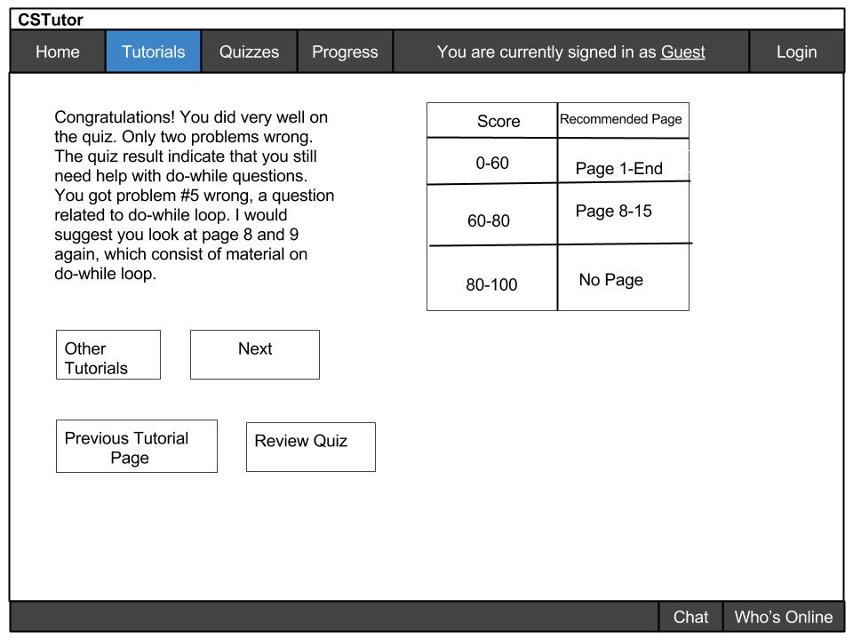

Before a student takes a quiz, the student usually finishes a small mini tutorial. The instructor gets to decide where a quiz appears and how many quizzes appear in the tutorial. Once the student finished reading the mini-tutorial, the student clicks on "start the quiz" to start taking the quiz:

Figure 2.5.1 Example of An End of a Tutorial
As seen from figure 1, This is an example of the last page of the tutorial. Once the student finishing reading, the student chooses to take a quiz or go back to review the tutorial.
The button "start the quiz" takes the student to a quiz page similar to the image below, where the student answers questions in the form of multiple choice, short answer, or fill in sample code.
The button "first page" takes the student back to the first page of the tutorial related to the quiz. This takes the student back to first page to go over any material that they do not understand.
Click "back" and that takes the student back to the previous page"
Here is an example of a student taking the quiz

Figure 2.5.2 Example of a page of the quiz
For this quiz, the student fills in the answer. The student continues to fill out the questions and finishes the quiz.
Here is an example of a student turning in the quiz:
Figure 2.5.3 Example of a Student Submitting a quiz
A dialog shows up and prompt the user again for yes once the student completes the quiz. This prevents students from accidentally clicking submit and regret any question they have or have not answered.
Once the student clicks "submit", the result is going to get computed:

Figure 2.5.4 Example of a Quiz Result
To go to other tutorials, the student clicks on "other tutorials". To go to next mini tutorial, the student clicks "next". To go to the last tutorial page before the quiz, click "previous tutorial page", or "review quiz" to look at what problems were wrong. Again, the amount of these quizzes created are controlled by the instructor.
The quiz suggests students with great scores to move on. Otherwise, as indicated in the picture, if the student got some score between 60-80, the student go to "page 8"(in reality, the instructor customizes the quiz result to tell the student which page to go to) and review from there. If the student scored below a 60, the student go back to the beginning of the tutorial and review it again.